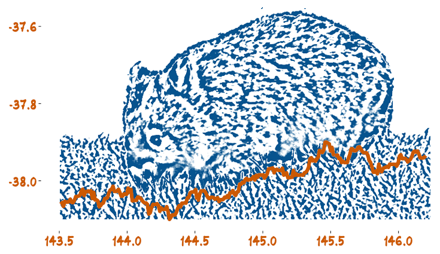

Workshop Organised by the Monash Business Analytics Team
28-29 November 2019
28-29 November 2019

WOMBAT2019 is the third workshop organised by the Monash Business Analytics Team, and is sponsored by the Monash Business School Network of Excellence on High-Dimensional Dynamic Systems.The network aims to create new econometric and statistical methods that exploit the power of computing and information in high-dimensional data. The workshop will focus on statistical methods and tools for effective data analysis.
Hadley Wickham is Chief Scientist at RStudio, an Adjunct Professor of Statistics at the University of Auckland, Stanford University, and Rice University, and a member of the R Foundation. Originally from New Zealand, he currently lives in Houston, Texas. Hadley is one of the best-known data scientists on the planet, especially for the tools he is created (both computational and cognitive) to make data science easier, faster, and more fun. His many R packages include ggplot2, dplyr, tidyr, purrr, readr, roxygen2, testthat, and devtools. His books include R for Data Science, Advanced R, and ggplot2: elegant graphics for data analysis.
Galit Shmueli is Tsing Hua Distinguished Professor at the Institute of Service Science, National Tsing Hua University, Taiwan. She is also Department Editor at Decision Sciences Journal (Business Analytics Department). Originally from Israel, she has worked in the US, Bhutan, India and now Taiwan. Her research focuses on statistical and data mining methodology with applications in information systems, electronic commerce, biosurveillance and healthcare. She has authored many books, including the popular textbook Data Mining for Business Analytics, and over 100 journal articles.
Simon Angus Estimating Sleep & Work Hours from Alternative Data by Functional Classification Analysis (FCA) At what time of day will road accidents on a major freeway most likely occur given that historical data on driver demographics, vehicle type, usage, and weather are available at hourly resolution? At what age is a particular degenerative disease most likely to strike an individual given that a large number of body mass, height, morbidity and diet composition trajectories by age are available for a comparison sample? These problems, and thousands like them, are typically handled with the machinery of functional data analysis: one aims to estimate or learn the function, f which maps from a typically high dimensional predictor trajectory, x(t) to a scalar outcome y, i.e. s$f: x(t) mapsto y. However, both of these examples have a particular feature in common: the domain of the outcome (time of day, age) co-incides with the supporting domain of the predictor trajectories. Here we show that for this wide class of problems, this feature can be exploited by transforming the outcome and trajectory objects using commonly available tools such that the significant power of classification can be employed to learn f. We call this combined approach Functional Classification Analysis (FCA) and demonstrate its superior performance on two exemplar learning problems. Both problems aim to learn a mapping from alternative trajectory data (internet activity, electricity demand) to sleep and work start/end times drawn from the American Time Use Survey (ATUS). FCA is shown to provide significant advances over functional data analysis or other regression techniques and in particular handles extremely well the curse of dimensionality which bedevils this area. Joint work with Klaus Ackermann & Paul Raschky. | |
Richard Beare Longitudinal neuroimaging can provide information about changes in brain characteristics that may be important to understanding development, aging and disease. This talk will introduce the tools used to acquire neuroimaging data, the practical problems faced and statistical approaches used. | |
Gabriela d'Souza How immigration affects local labour markets: Estimation strategies for identifying the impact of immigration on local labour market outcomes Increasing migrant populations across the world has led to rising concerns about the impacts on local labour markets. Indeed, much of our migration policy is dictated by the concern that migrants crowd out employment opportunities for local workers. Researchers have tried to identify and test the impact that migration has had on the labour markets. Research based on natural experiments have shown mixed results (Card 1990, Borjas 2017 Clemens and Hunt 2017).Natural experiments as a methodology for analysing impacts of migrants have limited application to the Australian case as changes to immigration policy here have often been incremental. As a result, nonexperimental methods have come to prominence. Studies using nonexperimental techniques have also come under scrutiny (Card and Peri 2016, Brell and Dustmann 2019). Using latest data from the Survey of income and housing survey, this presentation will showcase new ways of identifying the impacts of migrants that improve on existing nonexperimental methods based on Card and Peri (2016). | |
Yanan Fan Bayesian Semiparametric Density estimation for Ensemble of Climate Models Extreme heatwaves have been perceived as one of the most critical atmospheric risks associated with anthropogenic climate change. It impacts substantially on health, agriculture, fisheries, etc. In Korea for example, heatwave-induced mortality is higher than that of any other extreme weather events. Long-term projections of how heatwaves are expected to change will facilitate the management of future risk. In this work, we consider how to combine outputs from multiple climate models for the prediction of future extreme events. We use a semiparametric Bayesian density estimator, based on pyramid quantiles, and we demonstrate the usefulness of this estimator to model extreme and rare events. We then discuss how multiple density estimates are then weighted and combined to produce ensemble predictions. | |
Ben Fulcher Inferring low-dimensional parametric variation underlying time-series datasets Large and complex time-series datasets are measured across diverse real-world applications, from high-throughput phenotyping in bioinformatics to unprecedented databases of astrophysics light curves. In these applications, it is crucial to characterize whether there is some simplifying, interpretable low-dimensional structure can capture variation across the dataset. In this talk, I will introduce a data-driven framework for inferring the parametric variation underlying dynamical variation across a time-series dataset. Applying our method to a wide range of synthetic time-series datasets, we demonstrate how our method can infer the number of parameters in the generative model underlying the empirical dataset, as well as providing interpretable algorithmic estimates of these model parameters. The method also reproduces biologically interpretable two-dimensional variation across an empirical fly-movement dataset. Our results pave the way for much-needed data-driven frameworks to bridge the gap between deep theoretical understanding of dynamics, and the large-scale datasets that characterize the modern world. | |
Petra Kuhnert Modelling a Model with Another Model: Exploring how Neural Networks can be used to Mimic Complex Agricultural Processes Farming practices require complex decisions to ensure that the crop planted produces the maximum amount of yield under the constraints of varying climate, pests and disease. While agronomists provide a source of expert information to the farmer and advise on nitrogen application and herbicide use, it is challenging to obtain information that can help a farmer make faster and more accurate decisions about their crop throughout the growing season. Data is expensive to collect and capture and experimental design setups to test cropping regimes become complex to implement. Models like the Agricultural Production Simulator or APSIM have been explored to examine different farming scenarios and it has more recently been used to drive Graincast, a tool enabling farmers to make informed decisions about their farming practices. While process models like APSIM are useful for characterising agricultural processes, they can be slow to run, especially in an experimental design setup for the purpose of testing farming regimes. They are also deterministic, which means uncertainty is not quantified as part of the output. We have been exploring methods that emulate models like APSIM to provide a faster and more efficient surrogate version that can be used in more real time decision-making frameworks. The idea of “modelling a model with another model” is not new as there are many examples of this using Gaussian Processes in the literature. Our approach draws on the deep learning literature and explores neural networks as an emulation tool. In this presentation, emulators will be described and the Eco State Networks or ESN will be implemented for an APSIM model run for a site in Dalby in Queensland. This is joint work with Dan Pagendam, Chris Wikle, Josh Bowden and Roger Lawes and represents part of the Tykhe Toolbox within the Digiscape Future Science Platform in CSIRO. | |
Dean Marchiori Pearls and pitfalls of time series analysis using Google Analytics data Google Analytics is a popular service that tracks and reports website traffic. Using R to query, clean and model Google Analytics data can add significant value, but also significant complexity. From API's to BigQuery, in this talk I will provide on overview of Google's unique approach to structuring web data, an overview of the R landscape and share some pearls and pitfalls of using Google Analytics data at scale for data analysis projects. | |
Miles McBain So Hot Right Now: Data Science at Queensland Fire and Emergency Services Against a complex backdrop of environmental and social change, QFES have made data science part of our planning strategy to ensure we are able to anticipate and meet Queensland's future needs. In my short time grappling with this task I have come to appreciate I am faced with a data science hyperproblem that tests the limits of existing tools, and exposes several gaps. In this talk I will give an overview of the problems my team are tackling at QFES, the approaches we're taking, and highlight areas ripe for development that could help all organisations facing uncertainty due to a changing climate. | |
Janice Scealy Elliptical symmetry models and robust estimation methods on spheres First we propose a new distribution for analysing directional data that is a novel transformation of the von Mises-Fisher distribution. The new distribution has ellipse-like symmetry, as does the Kent distribution; however, unlike the Kent distribution the normalising constant in the new density is easy to compute and estimation of the shape parameters is straightforward. To accommodate outliers, the model also incorporates an additional shape parameter which controls the tail-weight of the distribution. Next we define a more general semi parametric elliptical symmetry model on the sphere and propose two new robust direction estimators, both of which are analogous to the affine-equivariant spatial median in Euclidean space. We calculate influence functions and show that the new direction estimators are standardised bias robust in the highly concentrated case. To illustrate our new models and estimation methods, we analyse archeomagnetic data and lava flow data from two recently compiled online geophysics databases. | |
Emi Tanaka Software design, selection and estimation for latent variable models Latent variable models (LVMs), including the special case of factor analysis when the responses are conditionally normally distributed, are gaining traction in many scientific fields owing to both their statistical and computational advantages as a means of dimension reduction for high-dimensional data. Model selection for LVMs has an additional striking twist: as the name suggests, the latent variables are unobserved and have to be estimated from the data. Therefore, we need to select both the order and the structure of the factor loadings. I introduce our method for order selection in LVMs, Ordered FActor Lasso (OFAL, Hui et al., 2018), which utilises penalised likelihood methods to encourage both element-wise and group-wise sparsity in the loadings. Specifically, I will show how the OFAL penalty exploits both the grouped and hierarchical nature of the loadings, thus providing a natural approach to order selection, while also circumventing the issue of identifiability without the use of an arbitrary constraint. Furthermore, I will discuss a computational algorithm for calculating the OFAL estimates based on a convenient reparameterisation of the penalty. In addition, I will discuss the design of application programming interface (API) to specify these latent variable models. | |

| Galit Shmueli Re-purposing Classification & Regression Trees for Causal Research with High-Dimensional Data |
Nick Tierney Exploring and understanding the individual experience from longitudinal data, or "How to make better spaghetti (plots)" This talk discusses two challenges of working with longitudinal (panel) data: 1) Visualising the data, and 2) Understanding the model. Visualising longitudinal data is challenging as you often get a "spaghetti plot”, where a line is drawn for each individual. When overlaid in one plot, it can have the appearance of a bowl of spaghetti. With even a small number of subjects, these plots are too overloaded to be read easily. For similar reasons, it is difficult to relate the model predictions back to the individual and keep the context of what the model means for the individual. For both visualisation, and modelling, it is challenging to capture interesting or unusual individuals, which are often lost in the noise. Better tools, and a more diverse set of grammar and verbs are needed to visualise and understand longitudinal data and models, to capture the individual experiences. In this talk, I introduce the R package, brolgar (BRowse over Longitudinal data Graphically and Analytically in R), which provides a realisation of new concepts, verbs, and colour palettes to identify and summarise interesting individual patterns in longitudinal data. This package extends upon ggplot2 with custom facets, and the new tidyverts time series packages to efficiently explore longitudinal data. | |
Hadley Wickham My fourteen year fight with data reshaping The reshape package appeared on CRAN in 2005, followed by reshape2 in 2010, and tidyr in 2014. Across all three packages, there have been over 40 releases over the last 14 years. What makes reshaping/tidying data so hard? Why has it taken so many attempts to get it right? (And is it really right, or just right for now?) I'll use reshape-reshape2-tidyr as a lens think about the co-evolution of data structures and code, managing change, interface design, and the intertwined nature of R as a programming language and environment for interactive data analysis. |
Participants are to make their own travel and accommodation arrangements.
Melbourne is a popular destination for holiday travellers and business alike. We recommend booking a hotel well in advance prior to the workshop.
Suggested resources for booking accommodation include: